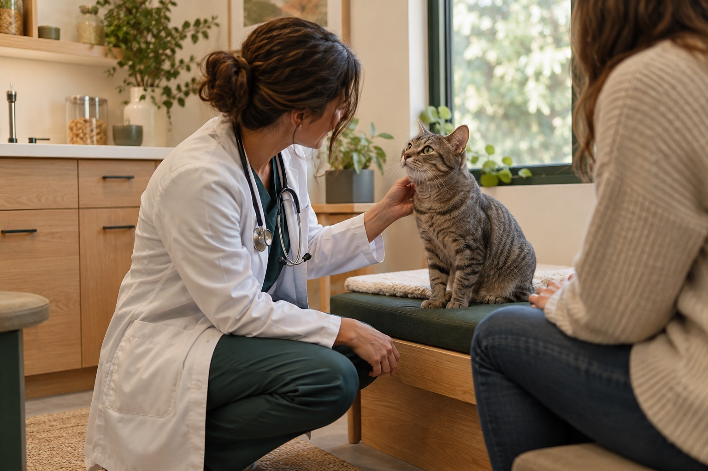

Listen first
Your observations are part of the clinical picture. We take them seriously.
We built Fayetteville Animal Hospital around a simple belief: the best veterinary care comes from knowing the whole story.

Pets cannot tell us where it hurts, but they tell us plenty. We observe closely, ask thoughtful questions, and use modern medicine to connect the clues.
Then we translate what we learn into clear choices. No rushed explanations, no one-size-fits-all plans—just honest guidance for the animal in front of us and the family beside them.
Fayetteville Animal Hospital is fictional, but its care philosophy reflects the standard we believe every local practice should strive for.
Your observations are part of the clinical picture. We take them seriously.
You should understand the options, tradeoffs, and next steps before making a decision.
We pair current evidence with sound judgment and the individual needs of each pet.
Real life is complicated. We meet families where they are and work forward together.
These identities are invented for this demonstration website and do not represent real clinicians.
Companion-animal medicine, preventive care, and thoughtful conversations with first-time pet families.
Internal medicine, senior pet care, and helping families navigate complex decisions with clarity.
Calm visits, connected teams, and an experience designed to feel easier for pets and people.
Quiet corners, natural light, and room to breathe.
Our imagined facility includes separate waiting areas for cats and dogs, comfortable exam rooms, an in-house diagnostic suite, modern dental and surgical spaces, and thoughtful details for pets who need extra time.
Explore our care capabilities